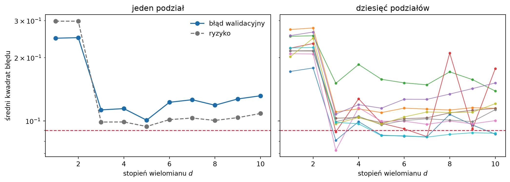
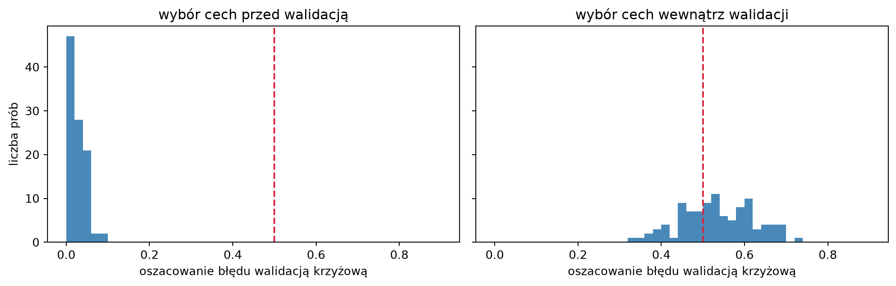
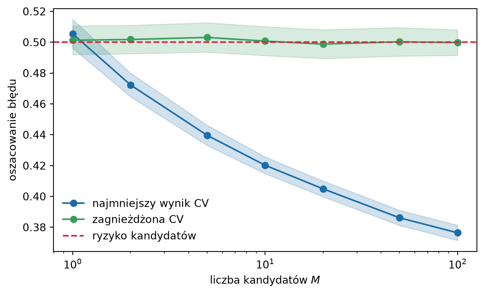
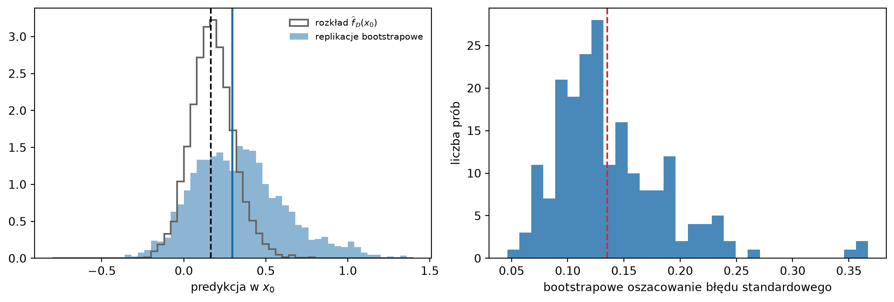

Ryzyko \(\Risk(f) = \E\big[\Loss(Y, f(\X))\big]\) jest średnią po rozkładzie \(P\), którego nie znamy. W rozdziałach 2–4 mogliśmy je liczyć dokładnie, bo dane były sztuczne, a rozkład – zadany przez nas. W realnym problemie mamy tylko próbę. Jedyną wielkością, jaką można policzyć od razu, jest błąd na zbiorze uczącym, a ten, jak pokazała sekcja 4.1, jest optymistyczny i to tym bardziej, im elastyczniejsza metoda. Wskazuje zawsze model najbardziej elastyczny, a więc często najgorszy.
Ten rozdział omawia, jak szacować ryzyko z danych. Wszystkie metody opierają się na jednej zasadzie, którą sformułowaliśmy już w rozdziale 1: model trzeba oceniać na obserwacjach, których nie widział podczas dopasowania. Różnią się tym, jak takie obserwacje uzyskać, gdy próba jest jedna, i jaką cenę za to płacimy. Przykłady liczymy dalej na danych sztucznych z rozdziału 4, bo tylko tam możemy porównać oszacowanie z prawdziwym ryzykiem i sprawdzić, jak dobre jest.
5.1 Trzy pytania
Pytanie „jak dobry jest model?” kryje w sobie trzy różne pytania, na które odpowiada się różnymi narzędziami.
Selekcja modelu. Mamy kilku kandydatów: różne wartości \(k\) w metodzie \(k\)-NN, różne stopnie wielomianu, różne metody. Chcemy wybrać tego, którego ryzyko jest najmniejsze. Do tego wystarczy uporządkować kandydatów według ryzyka. Oszacowanie może być obciążone, byle w podobny sposób dla wszystkich.
Ocena modelu. Wybraliśmy model i chcemy wiedzieć, ile wynosi jego ryzyko: jaki odsetek pomyłek popełni na nowych pacjentach, o ile przeciętnie pomyli się w prognozie. Tu potrzebna jest wartość ryzyka, a obciążenie oszacowania jest błędem.
Ryzyko modelu czy ryzyko metody. W ramce „Ryzyko modelu a ryzyko metody” z rozdziału 4 rozróżniliśmy dwie wielkości. Pierwsza to ryzyko \(\Risk(\fD)\) predyktora dopasowanego do zbioru uczącego \(\mathcal{D}\), który faktycznie mamy. Druga to ryzyko oczekiwane metody uczenia, uśrednione po zbiorach uczących liczności \(n\): \[
\overline{\Risk}_n = \E_{\mathcal{D}}\big[\Risk(\fD)\big] .
\tag{5.1}\] Przy ocenie gotowego modelu, który trafi do użytku, interesuje nas pierwsza. Przy porównaniu metod, na przykład w pracy badawczej, częściej druga. Część narzędzi szacuje pierwszą z nich, część – drugą, choć zwykle przedstawia się je wszystkie jako oszacowania „błędu modelu”.
Najprostsza sytuacja wygląda tak. Predyktor \(\widehat f\) jest już ustalony: dopasowaliśmy go do zbioru uczącego \(\mathcal{D}\) i więcej go nie zmieniamy. Mamy też zbiór testowy – \(m\) nowych obserwacji \((\X'_1, Y'_1), \dots, (\X'_m, Y'_m)\), niezależnych od siebie i od \(\mathcal{D}\), z tego samego rozkładu \(P\). Ryzyko szacujemy średnią stratą na zbiorze testowym: \[
\widehat\Risk_{\mathrm{test}}
= \frac{1}{m} \sum_{j=1}^{m} \Loss\big(Y'_j, \widehat f(\X'_j)\big) .
\tag{5.2}\] Jest to ryzyko empiryczne (1.9), tyle że liczone na danych, których predyktor nie widział. W rozdziale 1 zauważyliśmy, że dla predyktora ustalonego niezależnie od danych taka średnia jest nieobciążonym oszacowaniem ryzyka. Teraz możemy to powiedzieć dokładniej.
Twierdzenie 5.1 (Własności oszacowania testowego) Niech zbiór testowy będzie niezależny od \(\mathcal{D}\), a jego obserwacje niezależne i o rozkładzie \(P\). Oznaczmy \(\tau^2 = \Var\big(\Loss(Y, \widehat f(\X)) \,\big|\, \mathcal{D}\big)\) wariancję straty na nowej obserwacji przy ustalonym predyktorze. Wtedy \[
\E\big[\widehat\Risk_{\mathrm{test}} \,\big|\, \mathcal{D}\big] = \Risk(\widehat f),
\qquad
\Var\big(\widehat\Risk_{\mathrm{test}} \,\big|\, \mathcal{D}\big) = \frac{\tau^2}{m} .
\] Przy stracie 0–1 liczba błędów \(m\widehat\Risk_{\mathrm{test}}\) ma, przy ustalonym \(\mathcal{D}\), rozkład dwumianowy z parametrami \(m\) i \(\Risk(\widehat f)\), a \(\tau^2 = \Risk(\widehat f)\big(1 - \Risk(\widehat f)\big)\).
Dowód. Przy ustalonym \(\mathcal{D}\) predyktor \(\widehat f\) jest ustaloną funkcją, a straty \(L_j = \Loss\big(Y'_j, \widehat f(\X'_j)\big)\) są niezależnymi zmiennymi losowymi o tym samym rozkładzie, ze średnią \(\Risk(\widehat f)\) i wariancją \(\tau^2\). Średnia \(m\) takich zmiennych ma tę samą wartość oczekiwaną i wariancję \(\tau^2/m\). Przy stracie 0–1 każda strata \(L_j\) jest zmienną zero-jedynkową z prawdopodobieństwem sukcesu \(\Risk(\widehat f)\), więc ich suma ma rozkład dwumianowy. \(\square\)
Założenie niezależności od \(\mathcal{D}\) jest tu wszystkim. Gdyby obserwacje testowe trafiły choć częściowo do zbioru uczącego, straty \(L_j\) nie miałyby średniej \(\Risk(\widehat f)\) – mielibyśmy z powrotem optymizm błędu uczącego. Zwróćmy też uwagę, co twierdzenie szacuje: ryzyko tego predyktora, \(\Risk(\fD)\), a nie ryzyko metody (5.1).
5.2.1 Niepewność oszacowania
Pierwiastek z wariancji, \(\tau/\sqrt{m}\), to błąd standardowy oszacowania testowego. W klasyfikacji szacujemy go, podstawiając oszacowanie w miejsce ryzyka: \[
\widehat{\mathrm{se}} = \sqrt{\frac{\widehat\Risk_{\mathrm{test}}\,\big(1 - \widehat\Risk_{\mathrm{test}}\big)}{m}} .
\tag{5.3}\] Przy dużym \(m\) rozkład dwumianowy jest bliski normalnemu, więc przedział \(\widehat\Risk_{\mathrm{test}} \pm 1{,}96\,\widehat{\mathrm{se}}\) pokrywa ryzyko z prawdopodobieństwem około \(95\%\). W regresji \(\tau^2\) szacujemy wariancją z próby strat \(L_1, \dots, L_m\). Kwadraty błędów mają jednak zwykle rozkład silnie skośny, więc przybliżenie normalne wymaga tu większego \(m\) niż w klasyfikacji.
Wzór (5.3) szybko studzi zaufanie do małych zbiorów testowych. Przy błędzie rzędu \(10\%\) i \(m = 100\) błąd standardowy wynosi \(0{,}03\), więc przedział ufności rozciąga się od około \(4\%\) do \(16\%\). Aby połowa szerokości przedziału wynosiła \(h\), potrzeba \[
m \approx \frac{1{,}96^2\, \Risk(1 - \Risk)}{h^2}
\] obserwacji. Dla \(\Risk = 0{,}1\) i \(h = 0{,}01\) to około \(3500\) obserwacji, dla \(h = 0{,}005\) – około \(14\,000\). Dokładność rośnie jak \(\sqrt{m}\): dwukrotne zawężenie przedziału kosztuje czterokrotnie więcej danych. Ten sam rachunek stał za ramką „Dlaczego całkujemy zamiast losować zbiór testowy” w rozdziale 2: przy błędzie około \(0{,}16\) i \(20\,000\) obserwacjach testowych błąd standardowy wynosi \(\sqrt{0{,}16 \cdot 0{,}84 / 20\,000} \approx 0{,}0026\).
5.2.2 Porównanie dwóch modeli
Częściej niż wartość ryzyka interesuje nas, który z dwóch modeli, \(A\) czy \(B\), jest lepszy. Naturalnym oszacowaniem różnicy ryzyk jest różnica oszacowań testowych. Jeśli oba modele oceniamy na tym samym zbiorze testowym, różnica ta jest średnią różnic strat \(D_j = L^A_j - L^B_j\) na poszczególnych obserwacjach, a jej wariancja wynosi \[
\frac{\Var(L^A - L^B)}{m}
= \frac{\tau_A^2 + \tau_B^2 - 2\Cov(L^A, L^B)}{m} .
\] Straty dwóch rozsądnych modeli są silnie dodatnio skorelowane: oba mylą się na trudnych przypadkach i oba trafiają na łatwych. Kowariancja odejmuje się więc od sumy wariancji, a różnica jest szacowana znacznie dokładniej niż każde z ryzyk z osobna. Porównując modele, należy zatem korzystać z par strat na tych samych obserwacjach, a nie z dwóch oddzielnych przedziałów ufności.
Przy stracie 0–1 rachunek ma prostą postać. Obserwacje, na których oba modele się mylą albo oba trafiają, nic nie mówią o różnicy. Liczą się tylko obserwacje sporne: \(n_{AB}\) takich, na których myli się tylko \(A\), i \(n_{BA}\) takich, na których myli się tylko \(B\). Jeśli oba modele mają to samo ryzyko, to każda obserwacja sporna jest z równym prawdopodobieństwem jednego lub drugiego rodzaju, czyli \(n_{AB}\) ma rozkład dwumianowy z parametrami \(n_{AB} + n_{BA}\) i \(1/2\). Na tym opiera się test McNemara, polecany do porównywania dwóch klasyfikatorów na jednym zbiorze testowym (Dietterich 1998). Przykład: na \(m = 1000\) obserwacjach model \(A\) myli się \(100\) razy, a model \(B\) – \(120\) razy. Dwa oddzielne przedziały ufności wyraźnie na siebie nachodzą: różnica \(0{,}02\) to tylko około \(1{,}4\) błędu standardowego różnicy dwóch niezależnych oszacowań. Jeśli jednak modele różnią się na \(40\) obserwacjach, z których na \(30\) myli się tylko \(B\), a na \(10\) tylko \(A\), to przy równości ryzyk wynik tak skrajny jak \(10\) do \(30\) ma prawdopodobieństwo około \(0{,}002\). Przewaga modelu \(A\) jest dobrze udokumentowana (Zadanie 5.3).
5.2.3 Cena odłożenia danych
Zbiór testowy nie jest za darmo. Obserwacje odłożone do oceny nie biorą udziału w uczeniu, więc oceniamy model uczony na \(n - m\) zamiast \(n\) obserwacjach. Krzywe uczenia z sekcji 4.7 mówią, ile to kosztuje. Jeśli krzywa jest przy \(n - m\) już płaska, niewiele. Jeśli stromo opada, model uczony na wszystkich danych byłby wyraźnie lepszy niż ten, który oceniliśmy. Mamy więc konflikt: duże \(m\) daje dokładną ocenę słabszego modelu, małe \(m\) – niedokładną ocenę lepszego.
Druga cena jest mniej oczywista. Zbiór testowy zachowuje swoje własności tylko wtedy, gdy wynik na nim nie wpływa na model. Jeśli po obejrzeniu błędu testowego zmienimy cechy, hiperparametry czy metodę, a potem ocenimy nowy model na tym samym zbiorze, zbiór testowy stał się częścią procedury uczenia. Każde takie spojrzenie zużywa go po trochu (sekcja 5.6).
5.3 Zbiór walidacyjny
Gdy oprócz oceny trzeba dokonać wyboru – ustalić \(k\), stopień wielomianu albo metodę – dane dzieli się na trzy części. Na zbiorze uczącym dopasowujemy kandydatów. Na zbiorze walidacyjnym szacujemy ich ryzyka i wybieramy najlepszego. Na zbiorze testowym, którego dotąd nie dotykaliśmy, oceniamy model wybrany. Zbiór walidacyjny odpowiada na pytanie o selekcję, zbiór testowy – na pytanie o ocenę.
Podział na zbiór uczący i walidacyjny ma dwie wady. Obie widać na rysunku 5.1. Wzięliśmy próbę \(n = 100\) obserwacji z rozkładu z rozdziału 4: \(X\) jednostajne na \([0, 1]\), \(\fopt(x) = \sin(2\pi x) + x/2\), szum o odchyleniu standardowym \(\sigma = 0{,}3\). Połowę obserwacji przeznaczyliśmy do uczenia wielomianów stopni \(1\)–\(10\), połowę – do walidacji.
Kod
import numpy as npimport matplotlib.pyplot as pltfrom numpy.polynomial import Polynomialdef f_prawdziwa(x):"""Funkcja regresji z rozdziałów o metodzie k-NN i o obciążeniu."""return np.sin(2* np.pi * x) +0.5* xsigma =0.3siatka = np.linspace(0, 1, 1001)f_siatka = f_prawdziwa(siatka)def probka(n, rng):"""Losuje n obserwacji: X ~ U[0, 1], Y = f*(X) + szum N(0, sigma^2).""" x = rng.uniform(0, 1, n)return x, f_prawdziwa(x) + rng.normal(0, sigma, n)def ryzyko(predyktor):"""Ryzyko przy stracie kwadratowej, policzone całkowaniem po X ~ U[0, 1]."""return np.trapezoid((predyktor(siatka) - f_siatka) **2, siatka) + sigma **2rng = np.random.default_rng(1)x, y = probka(100, rng)stopnie = np.arange(1, 11)def podzial_walidacyjny(x, y, rng):"""Błąd walidacyjny i ryzyko wielomianów uczonych na losowej połowie próby.""" perm = rng.permutation(len(x)) ucz, wal = perm[: len(x) //2], perm[len(x) //2 :] bledy, ryzyka = [], []for d in stopnie: wielomian = Polynomial.fit(x[ucz], y[ucz], d) bledy.append(np.mean((wielomian(x[wal]) - y[wal]) **2)) ryzyka.append(ryzyko(wielomian))return np.array(bledy), np.array(ryzyka)fig, osie = plt.subplots(1, 2, figsize=(11, 4.0), sharey=True)bledy, ryzyka = podzial_walidacyjny(x, y, rng)osie[0].plot(stopnie, bledy, "o-", color="#1B6CA8", label="błąd walidacyjny")osie[0].plot(stopnie, ryzyka, "o--", color="0.45", label="ryzyko")osie[0].legend(frameon=False)osie[0].set_title("jeden podział")for _ inrange(10): bledy, _ = podzial_walidacyjny(x, y, rng) osie[1].plot(stopnie, bledy, "o-", ms=3, lw=1, alpha=0.8)osie[1].set_title("dziesięć podziałów")for ax in osie: ax.axhline(sigma **2, color="#D7263D", ls="--", lw=1.2) ax.set_yscale("log") ax.set_xlabel("stopień wielomianu $d$")osie[0].set_ylabel("średni kwadrat błędu")plt.tight_layout()plt.show()

Rysunek 5.1: Błąd na zbiorze walidacyjnym regresji wielomianowej w zależności od stopnia \(d\). Próba liczności \(n = 100\) podzielona losowo na połowę uczącą i połowę walidacyjną. Po lewej: jeden podział; szara linia to ryzyko tych samych wielomianów, policzone całkowaniem po znanym rozkładzie. Po prawej: dziesięć różnych podziałów tej samej próby. Oś pionowa w skali logarytmicznej.
Lewy panel pokazuje, że błąd walidacyjny dobrze oddaje kształt krzywej ryzyka: obie gwałtownie spadają między stopniem \(2\) a \(3\), mają minimum w okolicy stopnia \(5\) i dalej powoli rosną. Do selekcji to wystarcza. Prawy panel pokazuje pierwszą wadę: wynik zależy od tego, które obserwacje trafiły do której części. Różne podziały tej samej próby dają krzywe przesunięte względem siebie i wskazują różne stopnie jako najlepsze. Zbiór walidacyjny liczy \(50\) obserwacji, a jak widzieliśmy w sekcji 5.2, przy takiej liczności oszacowanie ma duży błąd standardowy. Druga wada to marnotrawstwo: wielomiany uczymy na połowie danych, więc oceniamy modele gorsze niż te, które moglibyśmy dopasować do całej próby. Przy stromej krzywej uczenia błąd walidacyjny przeszacowuje wtedy ryzyko, a przy stopniach wysokich, których wariancja najsilniej zależy od \(n\), przeszacowuje je najbardziej. Selekcja przesuwa się przez to w stronę modeli prostszych, niż na to pozwala pełna próba.
5.4 Walidacja krzyżowa
Obie wady łagodzi pomysł prosty: zamiast jednego podziału zrobić kilka i tak je dobrać, by każda obserwacja trafiła do części oceniającej dokładnie raz.
Definicja 5.1 (Walidacja krzyżowa) Podzielmy indeksy \(\{1, \dots, n\}\) losowo na \(K\) rozłącznych części \(F_1, \dots, F_K\) możliwie równej liczności. Niech \(\widehat f^{(-k)}\) oznacza predyktor dopasowany do wszystkich obserwacji poza częścią \(F_k\). \(K\)-krotną walidacją krzyżową (ang. \(K\)-fold cross-validation) nazywamy oszacowanie ryzyka \[
\mathrm{CV}_K = \frac{1}{n} \sum_{k=1}^{K} \sum_{i \in F_k}
\Loss\big(y_i, \widehat f^{(-k)}(\x_i)\big) .
\tag{5.4}\] Przypadek \(K = n\), w którym każda część zawiera jedną obserwację, nazywamy walidacją typu „pozostaw jeden” (ang. leave-one-out cross-validation, LOOCV).
Każda obserwacja jest oceniana dokładnie raz, przez predyktor, który jej nie widział, i bierze udział w uczeniu \(K - 1\) razy. Wszystkie dane służą więc zarówno do uczenia, jak i do oceny, choć nigdy jednocześnie. Kosztem jest \(K\) dopasowań zamiast jednego. Pomysł ma długą historię; jego ujęcie jako ogólnej metody wyboru i oceny predyktorów zawdzięczamy Stone (1974).
Przy wyborze spośród kandydatów każdy z nich oceniamy na tym samym podziale na części, a wybieramy tego o najmniejszym \(\mathrm{CV}_K\). Dzięki temu porównanie jest sparowane w sensie sekcji 5.2: losowość podziału wpływa podobnie na wszystkich kandydatów.
5.4.1 LOOCV bez ponownego dopasowania
Walidacja typu „pozostaw jeden” wymaga \(n\) dopasowań, ale dla niektórych metod da się ją policzyć z jednego. Prześledźmy to na regresji \(k\)-NN (3.1). Niech wszystkie odległości między punktami będą różne, aby nie było remisów. Każdy punkt uczący \(\x_i\) należy do swojego otoczenia \(N_k(\x_i)\), bo sam od siebie ma odległość zero. Predykcja w punkcie uczącym to więc \[
\widehat f(\x_i) = \frac{1}{k} \Big( y_i + \sum_{j \in N_k(\x_i),\, j \ne i} y_j \Big)
= \frac{1}{k}\, y_i + \frac{k - 1}{k}\, \widehat f^{(-i)}(\x_i),
\] gdzie \(\widehat f^{(-i)}(\x_i)\) jest średnią wyników \(k - 1\) pozostałych sąsiadów. Te \(k - 1\) punktów to dokładnie najbliżsi sąsiedzi \(\x_i\) po usunięciu obserwacji \(i\) ze zbioru uczącego, więc \(\widehat f^{(-i)}\) jest predyktorem \((k-1)\)-NN dopasowanym bez obserwacji \(i\). Odejmując obie strony od \(y_i\), dostajemy \[
y_i - \widehat f(\x_i) = \frac{k - 1}{k}\, \big( y_i - \widehat f^{(-i)}(\x_i) \big) .
\tag{5.5}\] Reszta na zbiorze uczącym jest więc resztą „pozostaw jeden” pomniejszoną o czynnik \((k-1)/k\). Stąd błąd LOOCV reguły \((k-1)\)-NN jest równy błędowi uczącemu reguły \(k\)-NN pomnożonemu przez \(\big(k/(k-1)\big)^2\) (Zadanie 5.5). Dla dużego \(k\) ten czynnik wynosi w przybliżeniu \(1 + 2/k\), co zgadza się z wynikiem zadania 4.4: optymizm błędu uczącego reguły \(k\)-NN jest rzędu \(2\sigma^2/k\).
Podobną postać mają wszystkie metody, w których wektor predykcji na zbiorze uczącym jest liniową funkcją wektora wyników, \(\widehat{\mathbf{y}} = \mathbf{S}\mathbf{y}\), a usunięcie obserwacji nie zmienia sposobu ważenia pozostałych. Reszta „pozostaw jeden” wynosi wtedy \((y_i - \widehat f(\x_i))/(1 - S_{ii})\), gdzie \(S_{ii}\) to waga, jaką predykcja w \(\x_i\) przypisuje własnemu wynikowi (Hastie i in. 2009, rozdz. 7.10). Dla \(k\)-NN \(S_{ii} = 1/k\). Do tej klasy należy też metoda najmniejszych kwadratów, w tym regresja wielomianowa z rozdziału 4.
5.4.2 Ile części
Wybór \(K\) to znów kompromis między obciążeniem a wariancją, tym razem nie predyktora, tylko oszacowania ryzyka.
Najpierw obciążenie. Każdy z predyktorów \(\widehat f^{(-k)}\) uczy się na \(n(K-1)/K\) obserwacjach i jest oceniany na obserwacjach, których nie widział. Jeśli części mają równe liczności, każdy składnik sumy (5.4) ma więc wartość oczekiwaną równą ryzyku oczekiwanemu metody uczonej na próbie mniejszej niż \(n\): \[
\E\big[\mathrm{CV}_K\big] = \overline{\Risk}_{n(K-1)/K} .
\tag{5.6}\] Walidacja krzyżowa jest zatem pesymistyczna: szacuje ryzyko metody uczonej na mniejszej próbie, niż ta, której użyjemy. Wielkość pesymizmu zależy od nachylenia krzywej uczenia w okolicy \(n\). Przy \(K = 2\) uczymy na połowie danych i pesymizm bywa znaczny, przy \(K = n\) jest praktycznie zerowy.
Z wariancją sprawa jest mniej oczywista. Przy dużym \(K\) zbiory uczące różnych części pokrywają się prawie całkowicie, więc predyktory \(\widehat f^{(-k)}\) są do siebie bardzo podobne, a ich błędy – silnie skorelowane. Średnia skorelowanych wielkości ma większą wariancję niż średnia niezależnych (Zadanie 4.8). Z tego powodu często mówi się, że LOOCV ma dużą wariancję. Z drugiej strony przy dużym \(K\) każdy predyktor jest lepszy, a podziałów nie trzeba losować. Który efekt przeważa, zależy od metody. Sprawdźmy to na naszym przykładzie: dla wielomianu stopnia \(3\) i \(n = 50\) wylosowaliśmy \(500\) prób i w każdej policzyliśmy \(\mathrm{CV}_K\) dla \(K = 2, 5, 10, 50\) oraz, całkowaniem, prawdziwe ryzyko dopasowanego modelu.
Kod
rng = np.random.default_rng(5)n_cv, d_cv, powt_cv =50, 3, 500wartosci_K = [2, 5, 10, n_cv]def walidacja_krzyzowa(x, y, d, K, rng):"""K-krotna walidacja krzyżowa wielomianu stopnia d; zwraca straty poszczególnych obserwacji, ocenianych przez model, który ich nie widział.""" straty = np.empty(len(x))for czesc in np.array_split(rng.permutation(len(x)), K): ucz = np.ones(len(x), dtype=bool) ucz[czesc] =False wielomian = Polynomial.fit(x[ucz], y[ucz], d) straty[czesc] = (wielomian(x[czesc]) - y[czesc]) **2return stratycv = np.zeros((powt_cv, len(wartosci_K)))blad_std_naiwny = np.zeros(powt_cv) # dla K = 10, patrz dalejryzyko_modelu = np.zeros(powt_cv)for r inrange(powt_cv): x, y = probka(n_cv, rng) ryzyko_modelu[r] = ryzyko(Polynomial.fit(x, y, d_cv))for j, K inenumerate(wartosci_K): straty = walidacja_krzyzowa(x, y, d_cv, K, rng) cv[r, j] = straty.mean()if K ==10: blad_std_naiwny[r] = straty.std(ddof=1) / np.sqrt(n_cv)# Ryzyko oczekiwane metody przy liczności zbioru uczącego n(K-1)/K.def ryzyko_oczekiwane(n, rng, powtorzenia=3000):return np.mean([ryzyko(Polynomial.fit(*probka(n, rng), d_cv))for _ inrange(powtorzenia)])print(f"ryzyko oczekiwane przy n = {n_cv}: {ryzyko_modelu.mean():.4f}")print(" K uczących E[R] przy n(K-1)/K średnia CV odch. std. CV")for j, K inenumerate(wartosci_K): m = n_cv * (K -1) // Kprint(f"{K:2d}{m:8d}{ryzyko_oczekiwane(m, rng):18.4f}"f" {cv[:, j].mean():10.4f}{cv[:, j].std():13.4f}")
ryzyko oczekiwane przy n = 50: 0.1028
K uczących E[R] przy n(K-1)/K średnia CV odch. std. CV
2 25 0.1176 0.1143 0.0349
5 40 0.1057 0.1041 0.0233
10 45 0.1043 0.1029 0.0221
50 49 0.1034 0.1020 0.0215
Średnie oszacowań układają się zgodnie z (5.6). Dla \(K = 2\) średnia jest bliska ryzyku metody uczonej na \(25\) obserwacjach i wyraźnie wyższa niż ryzyko przy \(n = 50\). Dla \(K \ge 5\) pesymizm jest już mały w porównaniu z rozrzutem oszacowania. Odchylenie standardowe maleje z \(K\), ale dla \(K = 5, 10, 50\) jest prawie takie samo. W tym przykładzie LOOCV nie ma więc większej wariancji niż walidacja dziesięciokrotna. Wariancja LOOCV bywa duża przy metodach niestabilnych, których dopasowanie zmienia się skokowo przy niewielkiej zmianie danych (Arlot i Celisse 2010). Przy małym \(K\) niestabilność dotyka też walidacji krzyżowej: wielomian wysokiego stopnia uczony na połowie próby czasem „ucieka” przy krańcach przedziału, jak na rysunku 4.2, i pojedyncza część daje wtedy ogromny błąd.
W praktyce standardem jest \(K = 5\) lub \(K = 10\)(James i in. 2023, rozdz. 5.1). Pesymizm jest wtedy zwykle niewielki, koszt – pięć lub dziesięć dopasowań, a wynik nie zależy od szczególnych własności metody.
5.4.3 Co szacuje walidacja krzyżowa
Z (5.6) wynika, że walidacja krzyżowa jest oszacowaniem ryzyka oczekiwanego metody, a nie ryzyka modelu dopasowanego do naszej próby. Można by jednak sądzić, że skoro oszacowanie liczymy z naszej próby, to przynajmniej podąża za ryzykiem naszego modelu: w próbach, z których wyszedł model gorszy niż przeciętny, powinno być wyższe. Rysunek 5.2 pokazuje, że tak nie jest.
Rysunek 5.2: Oszacowanie dziesięciokrotną walidacją krzyżową a ryzyko dopasowanego modelu \(\Risk(\widehat f_{\mathcal{D}})\) dla 500 prób liczności \(n = 50\) (wielomian stopnia \(3\)). Linie przerywane: ryzyko oczekiwane metody \(\overline{\Risk}_n\). Linia kropkowana: prosta \(y = x\).
Chmura punktów jest wydłużona w pionie i nie układa się wzdłuż przekątnej. Ryzyko dopasowanego modelu zmienia się od próby do próby niewiele, a oszacowanie walidacją krzyżową – ponad dwa razy bardziej, i obie wielkości są praktycznie nieskorelowane. Większość rozrzutu oszacowania pochodzi z szumu w \(n\) obserwacjach, na których je liczymy, a nie z różnic między dopasowanymi modelami. Oszacowanie trafia przeciętnie w \(\overline{\Risk}_n\) – środek chmury leży na przecięciu linii przerywanych – ale nie mówi, czy nasz model jest lepszy, czy gorszy od przeciętnego. Podobny obraz w przykładzie klasyfikacyjnym przedstawiają Hastie i in. (2009, rozdz. 7.12). Bates i in. (2024) wykazali, że dla modelu liniowego dopasowanego metodą najmniejszych kwadratów wielkością szacowaną przez walidację krzyżową nie jest ryzyko modelu dopasowanego do posiadanych danych, lecz ryzyko uśrednione po wielu hipotetycznych próbach, czyli \(\overline{\Risk}_n\). Ramka „Ryzyko modelu a ryzyko metody” z rozdziału 4 dostaje w ten sposób konkretną treść: walidacja krzyżowa ocenia procedurę uczenia zastosowaną do prób liczności \(n\), a nie konkretny dopasowany model. Ocenę konkretnego modelu daje tylko niezależny zbiór testowy.
5.4.4 Błąd standardowy walidacji krzyżowej
Wynik walidacji krzyżowej podaje się zwykle z błędem standardowym. Najprostszy przepis traktuje \(n\) strat z (5.4) jak straty na zbiorze testowym i dzieli ich odchylenie standardowe przez \(\sqrt{n}\). Te straty nie są jednak niezależne: każda para obserwacji z różnych części ma wspólną większość zbioru uczącego. Bengio i Grandvalet (2004) wykazali, że nieobciążony estymator wariancji \(\mathrm{CV}_K\) nie istnieje dla żadnego \(K\). Naiwny błąd standardowy jest zwykle zaniżony. W symulacji z rysunku 5.2 wygląda to tak:
Naiwny błąd standardowy jest tu zaniżony o około \(10\%\), a przedział, który nominalnie ma pokrywać ryzyko oczekiwane w \(95\%\) prób, pokrywa je w \(89\%\). Przy metodach mniej stabilnych różnica bywa większa. Poprawne przedziały ufności dla walidacji krzyżowej wymagają dodatkowej pracy obliczeniowej (Bates i in. 2024). Do porównań i do wyboru modelu naiwny błąd standardowy wystarcza jednak jako miara skali niepewności.
Tak używa go reguła jednego błędu standardowego(Hastie i in. 2009, rozdz. 7.10). Spośród kandydatów uporządkowanych od najprostszego do najbardziej elastycznego wybieramy najprostszego, którego oszacowanie \(\mathrm{CV}_K\) nie przekracza minimum o więcej niż jeden błąd standardowy. Uzasadnienie jest heurystyczne: różnice mniejsze niż błąd standardowy mogą być przypadkowe, a w razie wątpliwości model prostszy ma mniejszą wariancję i łatwiej go interpretować.
5.4.5 Walidacja krzyżowa w klasyfikacji
W klasyfikacji podział na części losuje się zwykle warstwowo (ang. stratified): tak, by proporcje klas w każdej części były takie jak w całej próbie. Przy rzadkiej klasie podział niewarstwowy może dać część bez żadnej obserwacji z tej klasy i błąd tej części nic o niej nie powie.
Druga decyzja dotyczy straty, którą oceniamy. Strata 0–1 odpowiada pytaniu o odsetek pomyłek, ale jest bardzo zgrubna: oszacowanie zmienia się skokami \(1/n\) i nie odróżnia modelu, który pomylił się, podając \(\widehat\eta = 0{,}51\), od modelu, który podał \(0{,}99\). Jeśli model ma zwracać prawdopodobieństwa, na przykład dla reguły kosztowej z sekcji 2.5, należy go oceniać stratą właściwą: Briera albo logarytmiczną. Oszacowanie jest wtedy mniej zmienne, bo każda obserwacja wnosi informację ciągłą, a nie tylko „trafił–nie trafił”. Strata logarytmiczna ma przy tym pułapkę: model \(k\)-NN zwraca \(\widehat\eta = 0\) albo \(1\), gdy wszyscy sąsiedzi są z jednej klasy. Jedna taka pomyłka daje stratę nieskończoną.
5.5 Wyciek informacji
Twierdzenie 5.1 i równość (5.6) mają wspólne założenie: obserwacje, na których oceniamy, nie mają żadnego wpływu na predyktor. W walidacji krzyżowej dotyczy to całej procedury, która z danych tworzy predyktor, a nie tylko ostatniego kroku, czyli dopasowania modelu. Każdy krok, w którym coś wyznaczamy z danych – parametry standaryzacji (3.4), uzupełnianie braków średnimi, wybór cech – trzeba powtarzać wewnątrz każdej części, korzystając wyłącznie z jej danych uczących. Złamanie tej zasady nazywa się wyciekiem informacji (ang. data leakage): informacja o obserwacjach oceniających przecieka do predyktora.
Przy standaryzacji wyciek jest zwykle niewielki. Średnia i odchylenie standardowe liczone z \(n\) zamiast z \(n(K-1)/K\) obserwacji różnią się niewiele i prawie nic nie mówią o wynikach. Przy wyborze cech może być ogromny. Rozważmy przykład z Hastie i in. (2009, rozdz. 7.10.2). Mamy \(n = 50\) obserwacji z dwóch równolicznych klas i \(p = 5000\) cech, które są czystym szumem: nie zależą od klasy. Każdy klasyfikator ma tu ryzyko \(1/2\). Procedura jest następująca: wybieramy \(100\) cech najsilniej skorelowanych z klasą, a na nich budujemy klasyfikator jednego najbliższego sąsiada. Procedurę oceniamy pięciokrotną walidacją krzyżową na dwa sposoby. W złym wybór cech robimy raz, na całej próbie, a walidacji poddajemy tylko klasyfikator. W dobrym wybór cech powtarzamy w każdej części, na jej danych uczących.
Kod
rng = np.random.default_rng(7)n_w, p_w, q_w, powt_w =50, 5000, 100, 100def najblizszy_sasiad(X_ucz, y_ucz, X_ocen):"""Klasyfikator 1-NN w metryce euklidesowej.""" odl = ((X_ocen[:, None, :] - X_ucz[None, :, :]) **2).sum(axis=2)return y_ucz[odl.argmin(axis=1)]def najsilniej_skorelowane(X, y, q):"""Indeksy q cech o największej bezwzględnej korelacji z y.""" Xc, yc = X - X.mean(axis=0), y - y.mean() kor = np.abs(Xc.T @ yc) / np.sqrt((Xc **2).sum(axis=0) * (yc **2).sum())return np.argsort(kor)[-q:]zle, dobre = [], []for _ inrange(powt_w): X = rng.normal(size=(n_w, p_w)) y = np.repeat([0, 1], n_w //2) cechy_calosc = najsilniej_skorelowane(X, y, q_w) # wyciek bledy_zle = bledy_dobre =0for czesc in np.array_split(rng.permutation(n_w), 5): ucz = np.ones(n_w, dtype=bool) ucz[czesc] =False c = cechy_calosc bledy_zle += np.sum(najblizszy_sasiad(X[ucz][:, c], y[ucz], X[czesc][:, c]) != y[czesc]) c = najsilniej_skorelowane(X[ucz], y[ucz], q_w) # tylko dane uczące bledy_dobre += np.sum(najblizszy_sasiad(X[ucz][:, c], y[ucz], X[czesc][:, c]) != y[czesc]) zle.append(bledy_zle / n_w) dobre.append(bledy_dobre / n_w)fig, osie = plt.subplots(1, 2, figsize=(11, 3.6), sharey=True)przedzialy = np.linspace(0, 0.9, 46)for ax, wyniki, tytul in [(osie[0], zle, "wybór cech przed walidacją"), (osie[1], dobre, "wybór cech wewnątrz walidacji")]: ax.hist(wyniki, bins=przedzialy, color="#1B6CA8", alpha=0.8) ax.axvline(0.5, color="#D7263D", ls="--", lw=1.5) ax.set_title(tytul) ax.set_xlabel("oszacowanie błędu walidacją krzyżową")osie[0].set_ylabel("liczba prób")plt.tight_layout()plt.show()print(f"średnie oszacowanie: zły sposób {np.mean(zle):.3f}, "f"dobry sposób {np.mean(dobre):.3f}")

Rysunek 5.3: Oszacowania błędu procedury „wybór 100 cech najsilniej skorelowanych z klasą + klasyfikator 1-NN” pięciokrotną walidacją krzyżową, dla 100 prób (\(n = 50\), \(p = 5000\) cech niezależnych od klasy). Po lewej: wybór cech na całej próbie, przed walidacją. Po prawej: wybór cech wewnątrz każdej części. Czerwona linia: prawdziwe ryzyko \(1/2\).
średnie oszacowanie: zły sposób 0.017, dobry sposób 0.525
Zły sposób przekonuje, że klasyfikator niemal się nie myli, choć w danych nie ma żadnej informacji o klasie. Mechanizm jest prosty. Wśród \(5000\) cech szumu przy \(50\) obserwacjach zawsze znajdą się takie, które przypadkiem silnie korelują z klasą. Wybierając je na całej próbie, wybieramy cechy dopasowane także do klas obserwacji, które później posłużą do oceny. Klasyfikator „wie” o nich coś, czego w nowych danych nie będzie. Dobry sposób daje oszacowania rozrzucone wokół \(1/2\), jak być powinno. Ten błąd metodologiczny nie jest wymyślony: Ambroise i McLachlan (2002) pokazali, że w opublikowanych analizach danych z mikromacierzy, gdzie cech są tysiące, a obserwacji kilkadziesiąt, prowadził on do raportowania błędów bliskich zera dla klasyfikatorów bez wartości predykcyjnej.
W bibliotece scikit-learn przed tym błędem chroni potok (Pipeline), o którym mówiliśmy w sekcji 3.7. Funkcje walidacji krzyżowej wywołują fit całego potoku osobno w każdej części, więc standaryzacja, wybór cech i model widzą tylko jej dane uczące.
Wyciek ma też źródła, przed którymi potok nie chroni, bo dotyczą samego podziału na części. Walidacja krzyżowa zakłada, że obserwacje są niezależne, a nowe dane pochodzą z tego samego rozkładu. Gdy to założenie zawodzi, losowy podział daje ocenę zbyt optymistyczną:
Obserwacje zgrupowane. Jeśli mamy po kilka pomiarów każdego pacjenta, a model ma działać dla nowych pacjentów, to losowy podział pomiarów pozwala ocenić model na pacjencie, którego inne pomiary widział. Dzielić trzeba całe grupy (w scikit-learn GroupKFold).
Dane uporządkowane w czasie. Jeśli model ma przewidywać przyszłość, ocenia się go tylko na obserwacjach późniejszych niż te, na których się uczył (TimeSeriesSplit). Losowy podział pozwala „przewidywać” przeszłość na podstawie przyszłości.
Duplikaty. Te same lub prawie te same obserwacje w części uczącej i oceniającej działają jak obserwacje testowe w zbiorze uczącym. Do tej kategorii należy też powielanie obserwacji rzadkiej klasy przeprowadzone przed podziałem.
Cechy z przyszłości. Cecha zarejestrowana po zdarzeniu, które przewidujemy – na przykład kod zabiegu wykonywanego tylko u chorych – daje świetne wyniki w walidacji i jest niedostępna w momencie, gdy predykcja jest potrzebna.
Ogólna zasada jest taka: podział na część uczącą i oceniającą ma naśladować sytuację, w której model będzie używany. Jeśli przyszłe dane będą pochodzić z innego szpitala, innego roku albo innej populacji niż próba, żaden podział próby tego nie odtworzy. Walidacja krzyżowa szacuje ryzyko w populacji, z której pochodzi próba, a wiarygodność tej oceny, jak zauważyliśmy w rozdziale 1, zależy od sposobu zebrania danych.
5.6 Selekcja modelu a ocena modelu
Wróćmy do trzech pytań z początku rozdziału. Walidacja krzyżowa służy do wyboru spośród kandydatów. Po wyborze kusi, by jako ocenę wybranego modelu podać jego wynik walidacji krzyżowej, najmniejszy wśród kandydatów. To błąd, i to systematyczny.
Dowód. Dla każdego \(l\) zachodzi \(\min_j \widehat\Risk_j \le \widehat\Risk_l\). Biorąc wartość oczekiwaną, dostajemy \(\E[\min_j \widehat\Risk_j] \le \Risk_l\) dla każdego \(l\), a więc także dla tego, przy którym \(\Risk_l\) jest najmniejsze. Druga nierówność wynika stąd, że \(\Risk_{\widehat\jmath}\) jest jednym z ryzyk \(\Risk_j\), więc nie jest mniejsze od najmniejszego z nich. \(\square\)
Wynik wybranego kandydata zaniża więc ryzyko nawet najlepszego z kandydatów, a ryzyko faktycznie wybranego modelu, który nie musi być najlepszy, jest jeszcze większe. Nierówność jest ostra, gdy oszacowania są losowe i kilku kandydatów ma podobne ryzyka: wybieramy wtedy tego, któremu szum akurat najbardziej pomógł. Zjawisko to bywa nazywane klątwą zwycięzcy. Rośnie z liczbą kandydatów i z wariancją oszacowań, a maleje, gdy jeden kandydat jest wyraźnie lepszy od pozostałych.
Jak zmierzyć ryzyko modelu, który wybieramy? Trzeba ocenić całą procedurę – „wybierz kandydata walidacją krzyżową i dopasuj go do danych” – tak samo, jak oceniamy każdą inną metodę uczenia: na danych, których ta procedura nie widziała. Prowadzi to do zagnieżdżonej walidacji krzyżowej(Varma i Simon 2006).
AdnotacjaZagnieżdżona walidacja krzyżowa
Dzielimy dane na \(K\) części zewnętrznych. Dla każdej części zewnętrznej \(F_k\):
Na pozostałych danych przeprowadzamy całą procedurę wyboru: dzielimy je na części wewnętrzne, walidacją krzyżową oceniamy wszystkich kandydatów i wybieramy najlepszego.
Wybranego kandydata dopasowujemy do wszystkich danych poza \(F_k\).
Oceniamy go na \(F_k\).
Średnia strat z kroku 3 jest oszacowaniem ryzyka całej procedury, łącznie z wyborem. W różnych częściach zewnętrznych wybrany może zostać inny kandydat – to normalne, bo oceniamy procedurę wyboru, a nie jednego kandydata.
Rysunek 5.4 pokazuje skalę zjawiska na danych bez żadnej informacji. Mamy \(n = 100\) obserwacji z \(p = 10\) cechami i klasą wylosowaną niezależnie od cech, więc każdy klasyfikator ma ryzyko \(1/2\). Kandydatami są klasyfikatory \(k\)-NN o dziesięciu różnych wartościach \(k\), uczone na dziesięciu różnych losowych trójkach cech – razem \(100\) kandydatów. Porównujemy dwie liczby: najmniejszy wynik pięciokrotnej walidacji krzyżowej spośród pierwszych \(M\) kandydatów i wynik zagnieżdżonej walidacji krzyżowej procedury wybierającej spośród nich.
Kod
rng = np.random.default_rng(11)n_kl, p_kl, powt_kl =100, 10, 200wartosci_k = [1, 3, 5, 7, 9, 11, 15, 21, 31, 41]liczby_M = [1, 2, 5, 10, 20, 50, 100]M_max =max(liczby_M)def bledy_knn(odl, y, ucz, ocen):"""Liczba błędów klasyfikatorów k-NN dla wszystkich k z listy wartosci_k na obserwacjach ocen, przy uczeniu na obserwacjach ucz. Macierz odległości jest liczona raz; nieparzyste k wykluczają remisy przy dwóch klasach.""" kolejnosc = np.argsort(odl[np.ix_(ocen, ucz)], axis=1) jedynki = np.cumsum(y[ucz][kolejnosc], axis=1) # klasy 1 wśród j najbliższychreturn np.array([np.sum((jedynki[:, k -1] > k /2) != y[ocen])for k in wartosci_k])def walidacja_kandydatow(odleglosci, y, indeksy, rng, K=5):"""Liczba błędów K-krotnej walidacji krzyżowej każdego kandydata na obserwacjach indeksy; kandydaci: (trójka cech, k).""" bledy = np.zeros(len(odleglosci) *len(wartosci_k))for czesc in np.array_split(rng.permutation(indeksy), K): ucz = np.setdiff1d(indeksy, czesc) bledy += np.concatenate([bledy_knn(o, y, ucz, czesc) for o in odleglosci])return bledymin_cv = np.zeros((powt_kl, len(liczby_M)))zagniezdzona = np.zeros((powt_kl, len(liczby_M)))wszystkie = np.arange(n_kl)for r inrange(powt_kl): X = rng.normal(size=(n_kl, p_kl)) y = rng.integers(0, 2, n_kl) trojki = [rng.choice(p_kl, 3, replace=False)for _ inrange(M_max //len(wartosci_k))] odleglosci = [((X[:, t][:, None] - X[:, t][None]) **2).sum(axis=2)for t in trojki] kolej = rng.permutation(M_max) # kandydaci w losowej kolejności cv_kand = walidacja_kandydatow(odleglosci, y, wszystkie, rng)[kolej] / n_kl min_cv[r] = [cv_kand[:M].min() for M in liczby_M]for czesc in np.array_split(rng.permutation(n_kl), 5): reszta = np.setdiff1d(wszystkie, czesc) cv_wew = walidacja_kandydatow(odleglosci, y, reszta, rng)[kolej] bledy_zew = np.concatenate([bledy_knn(o, y, reszta, czesc)for o in odleglosci])[kolej]for j, M inenumerate(liczby_M): zagniezdzona[r, j] += bledy_zew[np.argmin(cv_wew[:M])] / n_klfig, ax = plt.subplots(figsize=(6.5, 4.0))for wyniki, kolor, opis in [(min_cv, "#1B6CA8", "najmniejszy wynik CV"), (zagniezdzona, "#3A9D5D", "zagnieżdżona CV")]: sr = wyniki.mean(axis=0) bs = wyniki.std(axis=0) / np.sqrt(powt_kl) ax.plot(liczby_M, sr, "o-", color=kolor, label=opis) ax.fill_between(liczby_M, sr -2* bs, sr +2* bs, color=kolor, alpha=0.2)ax.axhline(0.5, color="#D7263D", ls="--", lw=1.5, label="ryzyko kandydatów")ax.set_xscale("log")ax.set_xlabel("liczba kandydatów $M$")ax.set_ylabel("oszacowanie błędu")ax.legend(frameon=False)plt.tight_layout()plt.show()

Rysunek 5.4: Optymizm wyboru. Dane bez informacji o klasie (\(n = 100\), \(p = 10\)), kandydaci to klasyfikatory \(k\)-NN na losowych trójkach cech. Niebieska linia: najmniejsze oszacowanie pięciokrotną walidacją krzyżową wśród \(M\) kandydatów. Zielona linia: zagnieżdżona walidacja krzyżowa procedury wyboru (5 części zewnętrznych, 5 wewnętrznych). Średnie z 200 prób; pas to \(\pm 2\) błędy standardowe średniej. Czerwona linia: ryzyko każdego kandydata.
Przy jednym kandydacie nie ma wyboru, obie metody są zwykłą walidacją krzyżową i trafiają w \(1/2\). Z każdym kolejnym kandydatem minimum wyników walidacji krzyżowej spada, a przy stu kandydatach procedura bez żadnej wartości predykcyjnej „osiąga” błąd poniżej \(40\%\). Zagnieżdżona walidacja krzyżowa pozostaje przy \(1/2\) niezależnie od \(M\). Spadek minimum jest przy tym wolniejszy, niż byłby dla niezależnych oszacowań (Zadanie 5.6), bo kandydaci o podobnych \(k\) albo wspólnych cechach mają silnie skorelowane wyniki.
W tym przykładzie wybór jest bezwartościowy, bo kandydaci są równi. Gdy jeden z nich jest wyraźnie lepszy, optymizm wyboru jest mniejszy, ale zawsze ma ten sam kierunek. Cawley i Talbot (2010) pokazali, że przy wielu hiperparametrach i małych próbach przekracza on różnice między porównywanymi metodami, więc porównanie metod na podstawie najmniejszych wyników walidacji krzyżowej może wskazać złego zwycięzcę.
Zostaje pytanie, który model ostatecznie oddajemy do użytku. Zagnieżdżona walidacja krzyżowa ocenia procedurę, a nie jeden model, więc po jej zakończeniu procedurę wyboru przeprowadza się jeszcze raz, na wszystkich danych, i wybranego kandydata dopasowuje do całej próby. Ocena z zagnieżdżonej walidacji odnosi się do tego modelu w takim sensie, w jakim walidacja krzyżowa odnosi się do każdego modelu: jest oszacowaniem ryzyka oczekiwanego procedury, nieco pesymistycznym, bo liczonym dla mniejszych prób. Alternatywą, prostszą i często lepszą, gdy danych jest dużo, jest odłożenie na samym początku zbioru testowego, na który nie patrzy się aż do końca. Ten zbiór ocenia wtedy konkretny, ostatecznie wybrany model.
5.7 Strojenie hiperparametrów
Wybór hiperparametrów na podstawie walidacji krzyżowej to strojenie (ang. hyperparameter tuning). Gdy hiperparametr jest jeden, jak \(k\) w metodzie \(k\)-NN, wystarczy policzyć wynik dla każdej rozsądnej wartości. Gdy jest ich kilka, liczba kombinacji rośnie wykładniczo i trzeba wybrać, które sprawdzić.
Przeszukiwanie siatki (ang. grid search) sprawdza wszystkie kombinacje z ustalonych list wartości. Jest proste i łatwe do zrównoleglenia, ale marnotrawne, gdy hiperparametry są nierówno ważne. Bergstra i Bengio (2012) zwrócili uwagę, że tak bywa zwykle: ryzyko zależy silnie od jednego lub dwóch hiperparametrów, a od reszty słabo. Siatka \(3 \times 3\) w dwóch wymiarach sprawdza dziewięć kombinacji, ale tylko trzy różne wartości każdego hiperparametru z osobna. Jeśli ważny jest tylko jeden, osiem z dziewięciu dopasowań niewiele wnosi. Przeszukiwanie losowe (ang. random search) losuje dziewięć punktów z tego samego obszaru, więc sprawdza dziewięć różnych wartości ważnego hiperparametru. Przy tej samej liczbie dopasowań przeszukiwanie losowe znajduje zwykle konfiguracje nie gorsze niż siatka, a w wielu wymiarach – wyraźnie lepsze.
Obie metody nie korzystają z wyników dotychczasowych prób. Metody sekwencyjne budują przybliżony model zależności wyniku walidacji od hiperparametrów i kolejne punkty wybierają tam, gdzie ten model przewiduje dobry wynik albo jest najbardziej niepewny. Należą do nich optymalizacja bayesowska i metoda TPE (ang. tree-structured Parzen estimator), stosowana domyślnie w bibliotece Optuna. Przy kosztownych modelach pozwalają one dodatkowo przerywać w trakcie uczenia próby, które od początku wypadają słabo.
Każda z tych metod jest procedurą wyboru spośród kandydatów, więc podlega twierdzeniu 5.2. Im więcej konfiguracji sprawdzimy i im skuteczniej szukamy minimum, tym bardziej najlepszy znaleziony wynik walidacji krzyżowej jest optymistyczny. Można dopasować się do szumu w walidacji tak samo, jak model dopasowuje się do szumu w danych uczących. Wynik strojenia nie jest więc oceną modelu. Ocenę daje zagnieżdżona walidacja krzyżowa albo zbiór testowy, który w strojeniu nie uczestniczył.
5.8 Bootstrap
Dotąd szacowaliśmy ryzyko. Równie często potrzebujemy niepewności innej wielkości obliczonej z próby: współczynnika modelu, predykcji w danym punkcie, pola pod krzywą, a nawet samego oszacowania ryzyka. Gdybyśmy znali rozkład \(P\), sprawa byłaby prosta. Wylosowalibyśmy z niego wiele prób, w każdej policzyli interesującą nas wielkość i zobaczyli jej rozrzut – tak jak w rozdziale 4 oglądaliśmy rozrzut dopasowanych wielomianów na rysunku 4.2. Rozkładu \(P\) nie znamy, mamy tylko próbę.
Bootstrap(Efron 1979) zastępuje nieznany rozkład \(P\) jego najlepszym przybliżeniem, jakim dysponujemy: rozkładem empirycznym\(\widehat P_n\), który każdej z \(n\) obserwacji próby przypisuje prawdopodobieństwo \(1/n\). Losowanie \(n\) obserwacji z \(\widehat P_n\) to losowanie \(n\) obserwacji z próby ze zwracaniem. Taką próbę bootstrapową\(\mathcal{D}^*\) traktujemy jak nową próbę z populacji.
AdnotacjaBłąd standardowy metodą bootstrap
Niech \(\widehat\theta = s(\mathcal{D})\) będzie wielkością obliczoną z próby.
Dla \(b = 1, \dots, B\) wylosuj z próby ze zwracaniem \(n\) obserwacji, tworząc próbę \(\mathcal{D}^*_b\), i oblicz \(\widehat\theta^*_b = s(\mathcal{D}^*_b)\).
Przedziałem ufności na poziomie \(95\%\) jest przedział między kwantylami rzędu \(0{,}025\) i \(0{,}975\) tych liczb (przedział percentylowy).
Metoda zawiera dwa przybliżenia. Pierwsze, statystyczne, to zastąpienie \(P\) przez \(\widehat P_n\); jego jakość zależy od \(n\) i od tego, jak gładko \(\widehat\theta\) zależy od danych. Drugie, numeryczne, to skończone \(B\); to przybliżenie poprawiamy po prostu, zwiększając \(B\). Do błędu standardowego wystarcza zwykle \(B\) rzędu kilkuset, do kwantyli w przedziale – kilku tysięcy.
Próba bootstrapowa zawiera niektóre obserwacje wielokrotnie, a innych wcale. Prawdopodobieństwo, że ustalona obserwacja nie zostanie wylosowana w żadnym z \(n\) losowań, wynosi \[
\Big(1 - \frac{1}{n}\Big)^{n} \xrightarrow[n \to \infty]{} e^{-1} \approx 0{,}368 .
\tag{5.7}\] Próba bootstrapowa zawiera więc przeciętnie około \(63{,}2\%\) różnych obserwacji z próby, a pozostałe \(36{,}8\%\) w niej nie występują (Zadanie 5.4).
Rysunek 5.5 pokazuje działanie metody na przykładzie, w którym znamy prawdziwy rozkład. Szacujemy błąd standardowy predykcji wielomianu stopnia \(3\) w punkcie \(x_0 = 0{,}95\), blisko krańca przedziału, gdzie dopasowania są najmniej stabilne.
Kod
rng = np.random.default_rng(6)n_b, d_b, x0 =50, 3, 0.95prawdziwy = np.array([Polynomial.fit(*probka(n_b, rng), d_b)(x0)for _ inrange(5000)])def bootstrap_predykcji(x, y, B, rng):"""Replikacje bootstrapowe predykcji wielomianu stopnia d_b w punkcie x0.""" indeksy = rng.integers(0, len(x), size=(B, len(x)))return np.array([Polynomial.fit(x[i], y[i], d_b)(x0) for i in indeksy])x, y = probka(n_b, rng)f_hat_x0 = Polynomial.fit(x, y, d_b)(x0)replikacje = bootstrap_predykcji(x, y, 2000, rng)oszacowania_se = np.array([bootstrap_predykcji(*probka(n_b, rng), 200, rng).std()for _ inrange(200)])fig, osie = plt.subplots(1, 2, figsize=(11, 3.8))przedzialy = np.linspace(-0.8, 1.4, 56)osie[0].hist(prawdziwy, bins=przedzialy, density=True, histtype="step", color="0.4", lw=1.5, label=r"rozkład $\widehat f_{\mathcal{D}}(x_0)$")osie[0].hist(replikacje, bins=przedzialy, density=True, color="#1B6CA8", alpha=0.5, label="replikacje bootstrapowe")osie[0].axvline(f_hat_x0, color="#1B6CA8", lw=1.8)osie[0].axvline(f_prawdziwa(x0), color="black", ls="--", lw=1.4)osie[0].set_xlabel("predykcja w $x_0$")osie[0].legend(frameon=False, fontsize=8)osie[1].hist(oszacowania_se, bins=30, color="#1B6CA8", alpha=0.8)osie[1].axvline(prawdziwy.std(), color="#D7263D", ls="--", lw=1.5)osie[1].set_xlabel("bootstrapowe oszacowanie błędu standardowego")osie[1].set_ylabel("liczba prób")plt.tight_layout()plt.show()print(f"prawdziwy błąd standardowy: {prawdziwy.std():.3f}")print(f"bootstrap w jednej próbie: {replikacje.std():.3f}")print("przedział percentylowy: ", np.round(np.percentile(replikacje, [2.5, 97.5]), 3))print(f"mediana oszacowań w 200 próbach: {np.median(oszacowania_se):.3f}")print("kwantyle 10% i 90% oszacowań: ", np.round(np.percentile(oszacowania_se, [10, 90]), 3))

Rysunek 5.5: Bootstrap dla predykcji \(\widehat f(x_0)\) wielomianu stopnia \(3\) w punkcie \(x_0 = 0{,}95\) (\(n = 50\)). Po lewej: dla jednej próby rozkład 2000 replikacji bootstrapowych (niebieski) na tle prawdziwego rozkładu \(\widehat f_{\mathcal{D}}(x_0)\) po 5000 próbach z populacji (szary kontur); pionowe linie: \(\widehat f(x_0)\) z tej próby (niebieska) i \(\fopt(x_0)\) (przerywana). Po prawej: bootstrapowe oszacowania błędu standardowego (\(B = 200\)) dla 200 różnych prób; czerwona linia to prawdziwy błąd standardowy.
prawdziwy błąd standardowy: 0.135
bootstrap w jednej próbie: 0.293
przedział percentylowy: [-0.14 1.016]
mediana oszacowań w 200 próbach: 0.125
kwantyle 10% i 90% oszacowań: [0.087 0.198]
Lewy panel pokazuje najważniejszą własność bootstrapu. Replikacje rozkładają się wokół predykcji \(\widehat f(x_0)\) z naszej próby, a nie wokół prawdziwej wartości \(\fopt(x_0)\): próba bootstrapowa „nie wie” więcej o populacji niż próba, z której ją wylosowano. Bootstrap odtwarza więc co najwyżej rozrzut estymatora, a nie jego położenie. W tej akurat próbie odtwarza go źle: replikacje są ponad dwa razy szersze niż prawdziwy rozkład. Prawy panel pokazuje, że to próba nietypowa. Oszacowania błędu standardowego skupiają się w pobliżu prawdziwej wartości, z medianą nieco poniżej niej, a w osiemdziesięciu procentach prób różnią się od niej o mniej niż połowę. Rozkład oszacowań jest jednak prawostronnie skośny, a próba z lewego panelu leży w jego dalekim ogonie. W takich próbach przy krańcu przedziału jest mało punktów i wielomiany dopasowane do prób bootstrapowych mocno się tam rozchodzą. Bootstrap jest zawodny dokładnie tam, gdzie estymator jest niestabilny.
5.8.1 Bootstrap a ocena ryzyka
Bootstrap można też wykorzystać do szacowania ryzyka. Pierwszy pomysł – uczyć predyktor na próbie bootstrapowej i oceniać go na całej próbie – jest optymistyczny, bo około \(63\%\) obserwacji oceniających było w zbiorze uczącym. Poprawka nasuwa się sama: każdą obserwację \(i\) oceniać tylko predyktorami z tych prób bootstrapowych, które jej nie zawierają. Średnia takich strat po wszystkich obserwacjach to bootstrap „pozostaw jeden”, oznaczany \(\widehat\Risk^{(1)}\). Każda obserwacja jest tu oceniana przez predyktor, który jej nie widział, więc optymizmu nie ma. Jest za to pesymizm podobny do walidacji krzyżowej: próba bootstrapowa zawiera tylko około \(0{,}632n\) różnych obserwacji i predyktor zachowuje się mniej więcej tak, jakby uczył się na tej liczbie danych.
Efron (1983) zaproponował, by oba błędy zrównoważyć, łącząc pesymistyczne \(\widehat\Risk^{(1)}\) z optymistycznym błędem uczącym \(\overline{\mathrm{err}}\): \[
\widehat\Risk^{(.632)} = 0{,}368\, \overline{\mathrm{err}} + 0{,}632\, \widehat\Risk^{(1)} .
\] Waga \(0{,}632\) to przeciętny odsetek obserwacji wylosowanych do próby bootstrapowej (5.7); jej uzasadnienie jest przybliżone (Hastie i in. 2009, rozdz. 7.11). Estymator ten zawodzi przy metodach, które silnie dopasowują się do próby. Dla reguły jednego najbliższego sąsiada \(\overline{\mathrm{err}} = 0\), więc nawet przy danych bez żadnej informacji, gdy ryzyko wynosi \(1/2\), dostajemy około \(0{,}632 \cdot
0{,}5 \approx 0{,}32\). Wersja .632+(Efron i Tibshirani 1997) przesuwa wagę w stronę \(\widehat\Risk^{(1)}\), gdy różnica między \(\widehat\Risk^{(1)}\) a \(\overline{\mathrm{err}}\) jest duża w porównaniu z błędem klasyfikatora bezwartościowego. Dla dwóch klas błędem tym jest \(\widehat\gamma = \widehat p_1 (1 - \widehat q_1) + (1 - \widehat p_1) \widehat q_1\), gdzie \(\widehat p_1\) to odsetek klasy \(1\) w próbie, a \(\widehat q_1\) – odsetek obserwacji, którym predyktor przypisuje klasę \(1\). Względny stopień nadmiernego dopasowania \(\widehat R = (\widehat\Risk^{(1)} - \overline{\mathrm{err}})/(\widehat\gamma
- \overline{\mathrm{err}})\), obcięty do przedziału \([0, 1]\), wyznacza wagę \[
\widehat w = \frac{0{,}632}{1 - 0{,}368\, \widehat R},
\qquad
\widehat\Risk^{(.632+)} = (1 - \widehat w)\, \overline{\mathrm{err}}
+ \widehat w\, \widehat\Risk^{(1)} .
\] Bez nadmiernego dopasowania (\(\widehat R = 0\)) jest to estymator .632, przy skrajnym (\(\widehat R = 1\)) – sam \(\widehat\Risk^{(1)}\).
Porównajmy te estymatory z dziesięciokrotną walidacją krzyżową na zbiorze dwóch półksiężyców z rozdziału 3, dla klasyfikatorów \(1\)-NN i \(15\)-NN uczonych na \(n = 100\) obserwacjach. Prawdziwe ryzyko dopasowanego modelu szacujemy na \(20\,000\) obserwacjach testowych; jego błąd standardowy jest rzędu \(0{,}002\).
Kod
from sklearn.datasets import make_moonsrng = np.random.default_rng(3)n_e, B_e, powt_e =100, 100, 200X_test, y_test = make_moons(n_samples=20_000, noise=0.30, random_state=1)def knn_klasy(odl, y_ucz, k):"""Klasyfikator k-NN z macierzy odległości (wiersze: punkty oceniane).""" najblizsi = np.argsort(odl, axis=1)[:, :k]return (y_ucz[najblizsi].mean(axis=1) >0.5).astype(int)def knn_test(X_ucz, y_ucz, k):"""Błąd na dużym zbiorze testowym, liczony porcjami dla oszczędności pamięci.""" bledy =0for porcja in np.array_split(np.arange(len(X_test)), 20): odl = ((X_test[porcja][:, None] - X_ucz[None]) **2).sum(axis=2) bledy += np.sum(knn_klasy(odl, y_ucz, k) != y_test[porcja])return bledy /len(X_test)nazwy = ["prawdziwe ryzyko", "błąd uczący", "bootstrap (1)",".632", ".632+", "CV, K = 10"]wyniki = {k: np.zeros((powt_e, len(nazwy))) for k in [1, 15]}for r inrange(powt_e): X, y = make_moons(n_samples=n_e, noise=0.30, random_state=int(rng.integers(2**31))) odl = ((X[:, None] - X[None]) **2).sum(axis=2) proby = rng.integers(0, n_e, size=(B_e, n_e)) czesci = np.array_split(rng.permutation(n_e), 10)for k in [1, 15]: err = np.mean(knn_klasy(odl, y, k) != y)# Bootstrap "pozostaw jeden": obserwację i oceniają tylko# predyktory z prób bootstrapowych, które jej nie zawierają. bledy, liczby = np.zeros(n_e), np.zeros(n_e)for i_b in proby: poza = np.setdiff1d(np.arange(n_e), i_b) pred = knn_klasy(odl[np.ix_(poza, i_b)], y[i_b], k) bledy[poza] += pred != y[poza] liczby[poza] +=1 err1 = np.mean(bledy[liczby >0] / liczby[liczby >0]) e632 =0.368* err +0.632* err1# .632+: błąd klasyfikatora bezwartościowego i względne przeuczenie. p1, q1 = y.mean(), knn_klasy(odl, y, k).mean() gamma = p1 * (1- q1) + (1- p1) * q1 err1 =min(err1, gamma) R_wzgl = (err1 - err) / (gamma - err) if err1 > err else0.0 w =0.632/ (1-0.368* R_wzgl) e632p = (1- w) * err + w * err1 cv10 =0for czesc in czesci: ucz = np.setdiff1d(np.arange(n_e), czesc) pred = knn_klasy(odl[np.ix_(czesc, ucz)], y[ucz], k) cv10 += np.sum(pred != y[czesc]) / n_e wyniki[k][r] = [knn_test(X, y, k), err, err1, e632, e632p, cv10]for k in [1, 15]:print(f"\n{k}-NN średnia odch. std. pierwiastek ze śr. kw. błędu") prawdziwe = wyniki[k][:, 0]for j, nazwa inenumerate(nazwy): w = wyniki[k][:, j] rmse = np.sqrt(np.mean((w - prawdziwe) **2))print(f"{nazwa:18s}{w.mean():8.3f}{w.std():10.3f}{rmse:10.3f}")
Wyniki potwierdzają, że żaden estymator nie wygrywa zawsze. Dla \(1\)-NN błąd uczący jest zerowy, a .632 wyraźnie zaniża ryzyko. Wersja .632+ poprawia go, ale nie do końca, a \(\widehat\Risk^{(1)}\) i walidacja krzyżowa są lekko pesymistyczne. Dla \(15\)-NN, który dopasowuje się do próby słabo, sam błąd uczący jest bliski ryzyku, a pozostałe estymatory nieco je zawyżają. W obu przypadkach odchylenia standardowe oszacowań są wyraźnie większe niż odchylenie standardowe samego ryzyka, a dla \(15\)-NN – kilkakrotnie. Każdy estymator trafia przeciętnie mniej więcej we właściwe miejsce, ale pojedyncze oszacowanie z próby liczności \(100\) jest niepewne – to ten sam wniosek, który dał rysunek 5.2. W praktyce dominuje walidacja krzyżowa, bo jest prostsza, nie wymaga poprawek zależnych od metody i nie zakłada nic o stracie; estymatory bootstrapowe bywają przydatne przy bardzo małych próbach.
5.9 Krzywe uczenia z danych
W sekcji 4.7 krzywe uczenia rysowaliśmy, znając ryzyko. Z danych szacuje się je tak samo jak każde ryzyko: walidacją krzyżową. Dla każdej części \(F_k\) i każdej liczności \(m\) mniejszej niż liczność zbioru uczącego losujemy z danych spoza \(F_k\) podpróbę liczności \(m\), dopasowujemy do niej model i liczymy jego błąd na \(F_k\) oraz na samej podpróbie. Losowanie podpróby powtarzamy kilkakrotnie i uśredniamy. W bibliotece scikit-learn robi to funkcja learning_curve. Rysunek 5.6 porównuje tak oszacowane krzywe z prawdziwymi dla wielomianów stopnia \(1\) i \(9\) z rysunku 4.4, przy jednej próbie liczności \(N = 1000\).
Rysunek 5.6: Krzywe uczenia regresji wielomianowej stopnia \(d = 1\) (po lewej) i \(d = 9\) (po prawej) oszacowane z jednej próby liczności \(N = 1000\) pięciokrotną walidacją krzyżową, z 20 podpróbami dla każdej części i liczności (punkty), na tle prawdziwych krzywych z 300 prób z populacji (linie). Linia kropkowana: błąd nieredukowalny \(\sigma^2\). Obie osie w skali logarytmicznej.
Oszacowane krzywe odtwarzają obraz z sekcji 4.7: dla prostej szczelina między krzywymi jest wąska, a obie leżą wysoko nad \(\sigma^2\); dla wielomianu stopnia \(9\) szczelina jest szeroka przy małych licznościach i zamyka się, gdy danych przybywa. Diagnostyka z tamtej sekcji – ryzyko spada z \(n\) i szczelina się zamyka, więc dominuje wariancja; obie krzywe płaskie i zbieżne, więc dominuje obciążenie – działa więc także bez znajomości ryzyka. Największa rozbieżność występuje dla \(d = 9\) przy najmniejszej liczności. Ryzyko oczekiwane jest tam średnią zdominowaną przez nieliczne próby, w których wielomian wysokiego stopnia „ucieka” przy krańcu przedziału. Sto dopasowań z podprób jednej próby takie rzadkie zdarzenia łapie nieregularnie, więc w tym punkcie oszacowanie jest niedokładne.
Krzywa uczenia oszacowana z danych kończy się na liczności zbioru uczącego w walidacji krzyżowej, czyli \(N(K-1)/K\). Czy dodanie danych pomoże, ocenia się więc, ekstrapolując jej przebieg poza zakres obserwacji. Jeśli krzywa ryzyka przy największych licznościach jest już płaska, więcej danych tej samej natury niewiele da.
5.10 Ocena modeli w praktyce
Wróćmy do przykładu z sekcji 3.7: klasyfikatora \(k\)-NN dla danych o nowotworach piersi, w którym \(k = 10\) przyjęliśmy arbitralnie. Teraz wybierzemy \(k\) walidacją krzyżową i ocenimy procedurę wyboru zagnieżdżoną walidacją krzyżową. Standaryzacja jest częścią potoku, więc w każdej części jej parametry są wyznaczane tylko z danych uczących.
Kod
from sklearn.datasets import load_breast_cancerfrom sklearn.model_selection import GridSearchCV, StratifiedKFold, cross_validatefrom sklearn.neighbors import KNeighborsClassifierfrom sklearn.pipeline import make_pipelinefrom sklearn.preprocessing import StandardScalerX, y = load_breast_cancer(return_X_y=True)potok = make_pipeline(StandardScaler(), KNeighborsClassifier())siatka_k = {"kneighborsclassifier__n_neighbors": [1, 3, 5, 7, 9, 11, 15, 21, 31, 51]}# Wybór k: pięciokrotna warstwowa walidacja krzyżowa na całych danych.wewnetrzna = StratifiedKFold(n_splits=5, shuffle=True, random_state=0)strojenie = GridSearchCV(potok, siatka_k, cv=wewnetrzna, scoring="accuracy")strojenie.fit(X, y)wyniki_cv = strojenie.cv_results_bledy =1- wyniki_cv["mean_test_score"]bledy_std = wyniki_cv["std_test_score"] / np.sqrt(5) # naiwny błąd standardowyprint(" k błąd CV błąd std.")for k, b, s inzip(siatka_k["kneighborsclassifier__n_neighbors"], bledy, bledy_std):print(f"{k:3d}{b:7.4f}{s:9.4f}")najlepszy = np.argmin(bledy)prog = bledy[najlepszy] + bledy_std[najlepszy]# Najprostszy model to największe k, czyli najsilniejsze wygładzanie.k_1se =max(k for k, b inzip(siatka_k["kneighborsclassifier__n_neighbors"], bledy)if b <= prog)print(f"\nnajmniejszy błąd CV: k = {strojenie.best_params_['kneighborsclassifier__n_neighbors']},"f" błąd {bledy[najlepszy]:.4f}")print(f"reguła jednego błędu standardowego: k = {k_1se}")# Ocena procedury wyboru: zagnieżdżona walidacja krzyżowa.zewnetrzna = StratifiedKFold(n_splits=5, shuffle=True, random_state=1)zagn = cross_validate(strojenie, X, y, cv=zewnetrzna, scoring="accuracy", return_estimator=True)print(f"\nzagnieżdżona walidacja krzyżowa: błąd {1- zagn['test_score'].mean():.4f}")print("k wybrane w częściach zewnętrznych:", [e.best_params_["kneighborsclassifier__n_neighbors"] for e in zagn["estimator"]])
Krzywa błędu walidacji krzyżowej jest w szerokim zakresie \(k\) płaska: między \(k = 3\) a \(k = 15\) wyniki różnią się mniej więcej o jeden błąd standardowy. Najmniejszy wynik osiąga jedna z wartości z tego zakresu, ale reguła jednego błędu standardowego wskazuje większe \(k\), czyli model gładszy, statystycznie nieodróżnialny od najlepszego. Zagnieżdżona walidacja krzyżowa daje tu, przy innym podziale na części, przypadkiem dokładnie ten sam błąd co najmniejszy wynik walidacji. Przy dziesięciu kandydatach i dość stabilnej metodzie optymizm wyboru okazał się więc mały w porównaniu z niepewnością oszacowania. Nie mogliśmy tego jednak wiedzieć bez zagnieżdżonej walidacji. Wartości \(k\) wybrane w częściach zewnętrznych różnią się między sobą. Wybór konkretnego \(k\) jest niestabilny, bo kilka wartości jest prawie równie dobrych, a zagnieżdżona walidacja ocenia procedurę, która tę niestabilność obejmuje. Model do użytku otrzymujemy, dopasowując strojenie do wszystkich danych, co zrobiliśmy w pierwszym kroku.
Uwagi bibliograficzne
Zbiór walidacyjny, walidację krzyżową i bootstrap na poziomie tego rozdziału przedstawiają James i in. (2023, rozdz. 5). Pełniejsze omówienie, z analizą optymizmu błędu uczącego, walidacji krzyżowej, estymatorów bootstrapowych .632 i .632+ oraz różnicy między ryzykiem modelu a ryzykiem metody, zawiera Hastie i in. (2009, rozdz. 7); przykład z wyborem cech przed walidacją pochodzi z Hastie i in. (2009, rozdz. 7.10.2). Przegląd wariantów walidacji krzyżowej i ich własności teoretycznych, z zaleceniami co do wyboru \(K\), dają Arlot i Celisse (2010).
Walidację krzyżową jako ogólną metodę wyboru i oceny predyktorów sformułował Stone (1974). Pytanie, co właściwie szacuje, i jak budować dla niej poprawne przedziały ufności, analizują Bates i in. (2024). Brak nieobciążonego estymatora wariancji wykazali Bengio i Grandvalet (2004), a testy statystyczne do porównywania klasyfikatorów, w tym test McNemara, omawia Dietterich (1998).
Optymizm wyniku walidacji krzyżowej po wyborze modelu i zagnieżdżoną walidację krzyżową opisali Varma i Simon (2006), a skalę tego zjawiska przy porównywaniu metod – Cawley i Talbot (2010). Klasycznym przykładem wycieku przez wybór cech jest praca Ambroise i McLachlan (2002). Przewagę przeszukiwania losowego nad siatką uzasadnili Bergstra i Bengio (2012).
Bootstrap wprowadził Efron (1979). Estymator .632 zaproponował Efron (1983) w pracy o szacowaniu błędu reguł predykcyjnych, a wersję .632+ podali Efron i Tibshirani (1997). Systematyczny wykład metody, z przedziałami ufności i wieloma przykładami, zawiera podręcznik Efron i Tibshirani (1993).
Zadania
Zadanie 5.1 Klasyfikator ma ryzyko około \(8\%\).
Ile obserwacji testowych potrzeba, aby połowa szerokości przedziału ufności na poziomie \(95\%\) wynosiła \(0{,}01\)? A \(0{,}002\)?
Wykaż, że \(\Risk(1 - \Risk) \le 1/4\), i podaj liczność zbioru testowego wystarczającą dla zadanej szerokości przedziału niezależnie od ryzyka. Ile razy jest ona większa od wyniku z punktu a)?
Klasa \(1\) stanowi \(1\%\) populacji, a interesuje nas czułość, czyli odsetek obserwacji klasy \(1\) rozpoznanych poprawnie. Ile obserwacji testowych trzeba, aby oszacować czułość rzędu \(0{,}9\) z dokładnością \(\pm 0{,}02\)?
Zadanie 5.2 Każda z opisanych procedur zawiera błąd metodologiczny. Wskaż go, określ kierunek, w którym zniekształca on ocenę, i zaproponuj poprawkę.
Wszystkie cechy standaryzujemy na całej próbie, a następnie przeprowadzamy dziesięciokrotną walidację krzyżową klasyfikatora \(k\)-NN.
Dzielimy dane na zbiór uczący i testowy. Dla \(k = 1, \dots, 50\) uczymy klasyfikator \(k\)-NN na zbiorze uczącym, wybieramy \(k\) o najmniejszym błędzie testowym i ten błąd podajemy jako ocenę modelu.
Dane zawierają po kilka wizyt każdego pacjenta. Wizyty dzielimy losowo na pięć części i przeprowadzamy walidację krzyżową modelu, który ma służyć do diagnozowania nowych pacjentów.
Model prognozuje dzienną sprzedaż na podstawie sprzedaży z poprzednich dni. Oceniamy go dziesięciokrotną walidacją krzyżową z losowym tasowaniem dni.
Klasa \(1\) jest rzadka, więc przed walidacją krzyżową powielamy jej obserwacje, aż klasy staną się równoliczne.
Zadanie 5.3 Dwa klasyfikatory oceniono na tym samym zbiorze testowym liczności \(m = 1000\). Model \(A\) pomylił się \(100\) razy, model \(B\) – \(120\) razy. Na \(70\) obserwacjach pomyliły się oba.
Wyznacz liczby \(n_{AB}\) i \(n_{BA}\) obserwacji, na których myli się tylko jeden z modeli.
Oblicz błąd standardowy różnicy oszacowań ryzyka, traktując je jak niezależne. Czy różnica jest wyraźna?
Przy założeniu, że oba modele mają to samo ryzyko, wyznacz dokładnie prawdopodobieństwo wyniku co najmniej tak skrajnego jak zaobserwowany podział obserwacji spornych (w dowolną stronę). Porównaj z wynikiem punktu b) i wyjaśnij różnicę, odwołując się do kowariancji strat.
W przykładzie z sekcji 5.2 liczby błędów były te same, ale oba modele pomyliły się na \(90\) obserwacjach. Dlaczego przewaga modelu \(A\) była tam lepiej udokumentowana?
Wykaż, że dla straty 0–1 estymator wariancji różnicy strat \(\widehat{\Var}(L^A - L^B)\) zależy tylko od \(n_{AB}\), \(n_{BA}\) i \(m\).
Zadanie 5.4 Próbę bootstrapową tworzymy, losując \(n\) razy ze zwracaniem z próby liczności \(n\).
Wykaż, że prawdopodobieństwo, że ustalona obserwacja nie znajdzie się w próbie bootstrapowej, wynosi \((1 - 1/n)^n\), i że dąży ono do \(e^{-1}\). Oblicz je dla \(n = 10, 50, 1000\).
Wyznacz oczekiwaną liczbę różnych obserwacji w próbie bootstrapowej.
Wyznacz prawdopodobieństwo, że ustalona obserwacja znajdzie się w obu z dwóch niezależnie wylosowanych prób bootstrapowych. Odnieś wynik do pytania c) zadania 4.8.
Sprawdź wyniki a) i b) symulacją.
Zadanie 5.5
Wyprowadź (5.5) i wywnioskuj z niego, że błąd LOOCV reguły \((k-1)\)-NN jest równy błędowi uczącemu reguły \(k\)-NN pomnożonemu przez \(\big(k/(k-1)\big)^2\). Gdzie korzystasz z założenia, że odległości są różne?
Sprawdź tę równość numerycznie: dla danych z rozdziału 4 (\(n = 100\)) i \(k = 2, 5, 20\) porównaj wynik cross_val_score z LeaveOneOut() dla KNeighborsRegressor(n_neighbors=k-1) z przeskalowanym błędem uczącym KNeighborsRegressor(n_neighbors=k).
Dlaczego ta sztuczka nie daje LOOCV reguły \(k\)-NN, lecz \((k-1)\)-NN? Co z niej wynika dla \(k = 1\)?
W ustalonym układzie z zadania 4.3, przy zerowym obciążeniu, oblicz wartość oczekiwaną błędu uczącego reguły \(k\)-NN i przeskaluj ją jak w punkcie a). Porównaj wynik z oczekiwanym błędem predykcji reguły \((k-1)\)-NN w punktach uczących, wyznaczonym z (4.6).
Zadanie 5.6 Mamy \(M\) kandydatów o tym samym ryzyku \(\Risk\), a ich oszacowania \(\widehat\Risk_1, \dots, \widehat\Risk_M\) są niezależne i mają rozkład normalny \(\Nrozk(\Risk, s^2)\).
Wykaż, że \(\E[\min_j \widehat\Risk_j] = \Risk - s\, c_M\), gdzie \(c_M\) to wartość oczekiwana maksimum \(M\) niezależnych zmiennych o rozkładzie \(\Nrozk(0, 1)\).
Oszacuj symulacyjnie \(c_M\) dla \(M = 5, 10, 100\). Przyjmując \(s = 0{,}05\), porównaj otrzymany optymizm z rysunkiem 5.4.
Powtórz symulację dla oszacowań skorelowanych: każde dwa mają współczynnik korelacji \(\rho\). (Wskazówka: \(\widehat\Risk_j = \Risk
+ s(\sqrt{\rho}\, Z_0 + \sqrt{1 - \rho}\, Z_j)\).) Jak optymizm zależy od \(\rho\)? Wyjaśnij, dlaczego krzywa na rysunku 5.4 opada wolniej niż w punkcie c).
Zbadaj, jak średnie oszacowanie przy złym sposobie zależy od liczby wybieranych cech \(q \in \{1, 10, 100, 1000\}\) i od liczby cech \(p \in \{100, 1000, 5000\}\). Wyjaśnij obserwowane zależności.
Zbuduj poprawną procedurę w scikit-learn jako potok make_pipeline(SelectKBest(f_classif, k=100), KNeighborsClassifier(n_neighbors=1)) i oceń ją funkcją cross_val_score. Sprawdź, że wynik zgadza się z dobrym sposobem.
Zastąp wybór cech standaryzacją wyznaczaną na całej próbie i sprawdź, czy ten wyciek ma mierzalny wpływ na oszacowanie.
Zadanie 5.8 Dane pochodzą z rozkładu dwóch półksiężyców z szumem \(0{,}30\) (make_moons), \(n = 200\). Prawdziwe ryzyko szacuj na zbiorze testowym liczności \(20\,000\).
Dla jednej próby narysuj na jednym wykresie wynik dziesięciokrotnej walidacji krzyżowej i ryzyko klasyfikatora \(k\)-NN dla \(k = 1, 3, \dots, 99\). Zaznacz \(k\) wybrane walidacją krzyżową, regułą jednego błędu standardowego i \(k\) o najmniejszym ryzyku.
Powtórz punkt a) dla \(100\) prób. Narysuj histogram wybranych \(k\). Oblicz średnią stratę wynikającą z wyboru, czyli różnicę między ryzykiem wybranego modelu a najmniejszym ryzykiem wśród kandydatów, dla obu reguł wyboru.
Oblicz średnią różnicę między najmniejszym wynikiem walidacji krzyżowej a ryzykiem wybranego modelu. Odnieś wynik do twierdzenia 5.2.
Ambroise, Christophe i Geoffrey J. McLachlan. 2002. „Selection Bias in Gene Extraction on the Basis of Microarray Gene-Expression Data”. Proceedings of the National Academy of Sciences 99 (10): 6562–66. https://doi.org/10.1073/pnas.102102699.
Arlot, Sylvain i Alain Celisse. 2010. „A Survey of Cross-Validation Procedures for Model Selection”. Statistics Surveys 4: 40–79. https://doi.org/10.1214/09-SS054.
Bates, Stephen, Trevor Hastie i Robert Tibshirani. 2024. „Cross-Validation: What Does It Estimate and How Well Does It Do It?”Journal of the American Statistical Association 119 (546): 1434–45. https://doi.org/10.1080/01621459.2023.2197686.
Bengio, Yoshua i Yves Grandvalet. 2004. „No Unbiased Estimator of the Variance of K-Fold Cross-Validation”. Journal of Machine Learning Research 5: 1089–105.
Bergstra, James i Yoshua Bengio. 2012. „Random Search for Hyper-Parameter Optimization”. Journal of Machine Learning Research 13: 281–305.
Cawley, Gavin C. i Nicola L. C. Talbot. 2010. „On Over-Fitting in Model Selection and Subsequent Selection Bias in Performance Evaluation”. Journal of Machine Learning Research 11: 2079–107.
Dietterich, Thomas G. 1998. „Approximate Statistical Tests for Comparing Supervised Classification Learning Algorithms”. Neural Computation 10 (7): 1895–923. https://doi.org/10.1162/089976698300017197.
Efron, Bradley. 1983. „Estimating the Error Rate of a Prediction Rule: Improvement on Cross-Validation”. Journal of the American Statistical Association 78 (382): 316–31. https://doi.org/10.1080/01621459.1983.10477973.
Efron, Bradley i Robert Tibshirani. 1993. An Introduction to the Bootstrap. Monographs on Statistics and Applied Probability 57. Chapman & Hall. https://doi.org/10.1201/9780429246593.
Efron, Bradley i Robert Tibshirani. 1997. „Improvements on Cross-Validation: The .632+ Bootstrap Method”. Journal of the American Statistical Association 92 (438): 548–60. https://doi.org/10.1080/01621459.1997.10474007.
Hastie, Trevor, Robert Tibshirani i Jerome Friedman. 2009. The Elements of Statistical Learning: Data Mining, Inference, and Prediction. 2. wyd. Springer.
James, Gareth, Daniela Witten, Trevor Hastie, Robert Tibshirani i Jonathan Taylor. 2023. An Introduction to Statistical Learning with Applications in Python. Springer Texts in Statistics. Springer.
Stone, M. 1974. „Cross-Validatory Choice and Assessment of Statistical Predictions”. Journal of the Royal Statistical Society: Series B (Methodological) 36 (2): 111–33. https://doi.org/10.1111/j.2517-6161.1974.tb00994.x.
Varma, Sudhir i Richard Simon. 2006. „Bias in Error Estimation When Using Cross-Validation for Model Selection”. BMC Bioinformatics 7: 91. https://doi.org/10.1186/1471-2105-7-91.